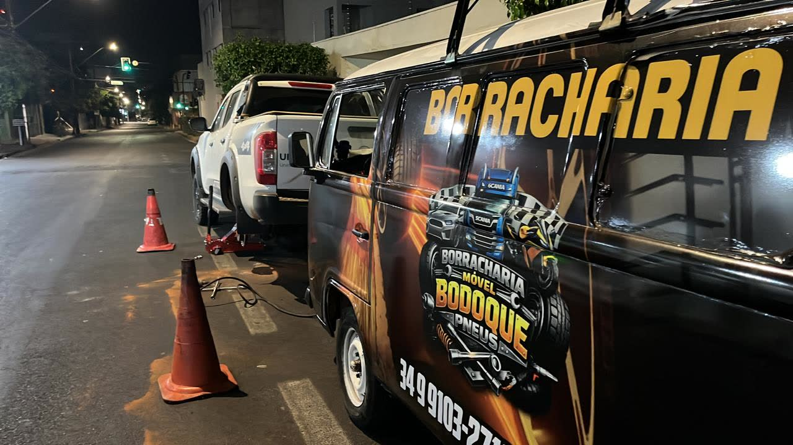
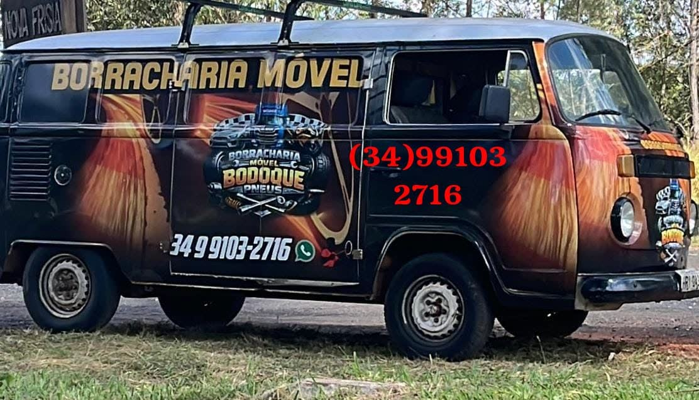
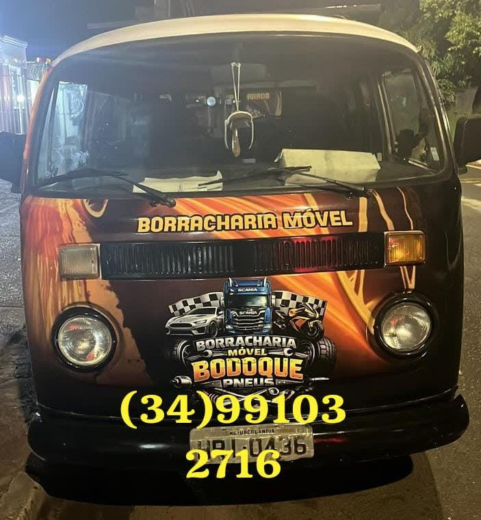

Oficina móvel em Uberlândia e rodovias, 24h por dia. Carros, motos, caminhonetes e caminhões — na rua, no trabalho ou no acostamento.
Sem internet no acostamento? Toque para ligar direto — funciona até com 2G.


Não perca tempo chamando guincho ou empurrando veículo com pneu no aro. A viatura oficial da Borracharia Móvel Bodoque Pneus é uma verdadeira oficina sobre rodas com gerador, compressor de alta pressão, desforcímetro e ferramentas industriais prontas para qualquer emergência.

Equipamento profissional para solucionar seu problema de pneu na hora, sem dor de cabeça e com a máxima segurança.
Não consegue soltar os parafusos emperrados ou o estepe está murcho? Levamos macaco hidráulico profissional e trocamos o pneu com rapidez e segurança.
Reparo de furo por prego, parafuso ou corte com aplicação de macarrão selante profissional ou manchão a frio no local onde o veículo estiver.
Pneu esvaziou totalmente no acostamento? Nosso compressor portátil de alta pressão enche e calibra seu pneu na pressão correta do fabricante.
Atendimento emergencial nas rodovias da região de Uberlândia (BR-050, BR-365, BR-452 e Anel Viário Ayrton Senna) com sinalização de segurança.
Socorro especializado para motoristas de aplicativo (Uber/99), entregadores, frotas de empresas, táxis e famílias em trânsito urbano.
Como consta em nosso Perfil Verificado no Google: prestamos suporte mecânico emergencial leve para não deixar você na mão em situações imprevistas.
Sem burocracia. Do contato telefônico até a sua volta à estrada em minutos.
Entre em contato pelo número (34) 99103-2716 informando o modelo do veículo e o tipo de problema no pneu.
Mande sua localização pelo WhatsApp (usando nosso botão de GPS rápido) ou informe a rua, bairro ou quilômetro da rodovia.
Nossa oficina móvel chega até você equipada, faz o conserto ou a troca e você segue viagem com total tranquilidade.
Toque 3 vezes e envie o pedido pronto no WhatsApp — com tudo que o Bodoque precisa para sair equipado.
Compromisso com pontualidade, honestidade no preço e serviço bem feito em qualquer hora do dia ou da noite.
12 avaliações de motoristas de Uberlândia e viajantes
Ver perfil verificado no Google →"Ótimo atendimento e muito rápido pra chegar até o local parabéns"
"Excelente profissional. Atendimento diferenciado com rapidez ."
"Me socorreu na BR de madrugada com a carreta furada. Veio com a pneumática e resolveu na hora com preço justo. Recomendo demais!"
Estimativa honesta antes de chamar. O valor exato é confirmado no WhatsApp — sem taxa escondida.
Calculamos sua distância até a base (Av. Imbaúbas, 1440) e estimamos a chegada.
Toque acima e permita o GPS — leva 3 segundos.
Estimativa média da região. Valor fechado no WhatsApp antes do deslocamento.
há 24 min — troca de estepe no Santa Mônica
Movimento real de plantão • atualizado enquanto você lê
Chegamos com compressor, macaco profissional e maquininha. Você acompanha tudo de perto.
Nossa viatura de borracharia móvel desloca-se a partir do Planalto para toda a área urbana de Uberlândia e principais rodovias da região:
Levamos a maquininha móvel até onde você estiver. Aceitamos as principais bandeiras e modalidades de pagamento para sua comodidade:
Respostas rápidas para as principais dúvidas dos motoristas.